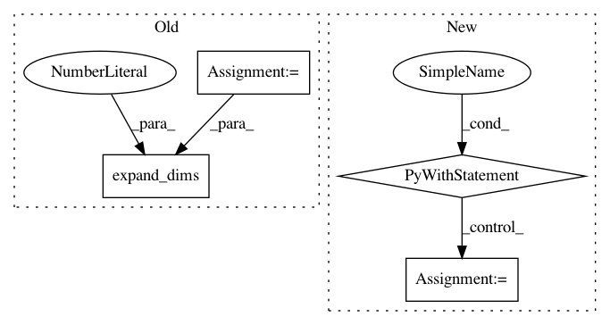

fcd690b14b04c11e7f25b9d473db056c4b7947b3,official/vision/keras_cv/ops/iou_similarity.py,,iou,#Any#Any#,59
Before Change
a tensor with shape [N, M] representing pairwise iou scores.
intersections = intersection(box1, box2)
areas1 = area(box1)
areas2 = area(box2)
unions = (
tf.expand_dims(areas1, 1) + tf.expand_dims(areas2, 0) - intersections)
return tf.where(
tf.equal(intersections, 0.0), tf.zeros_like(intersections),
tf.truediv(intersections, unions))
After Change
Returns:
a Tensor with shape [N, M] representing pairwise iou scores.
with tf.name_scope("IOU"):
intersections = intersection(gt_boxes, boxes)
gt_boxes_areas = area(gt_boxes)
boxes_areas = area(boxes)
boxes_rank = len(boxes_areas.shape)
boxes_axis = 1 if (boxes_rank == 2) else 0
gt_boxes_areas = tf.expand_dims(gt_boxes_areas, -1)
boxes_areas = tf.expand_dims(boxes_areas, boxes_axis)
unions = gt_boxes_areas + boxes_areas
unions = unions - intersections
return tf.where(
tf.equal(intersections, 0.0), tf.zeros_like(intersections),
tf.truediv(intersections, unions))
class IouSimilarity():
Class to compute similarity based on Intersection over Union (IOU) metric.
In pattern: SUPERPATTERN
Frequency: 3
Non-data size: 4
Instances
Project Name: tensorflow/models
Commit Name: fcd690b14b04c11e7f25b9d473db056c4b7947b3
Time: 2020-09-30
Author: tanzheny@google.com
File Name: official/vision/keras_cv/ops/iou_similarity.py
Class Name:
Method Name: iou
Project Name: keras-team/keras
Commit Name: 7c84229f350b83ce397b8c65e52e333e99b6d19d
Time: 2019-03-04
Author: francois.chollet@gmail.com
File Name: keras/backend/tensorflow_backend.py
Class Name:
Method Name: variable
Project Name: tensorflow/ranking
Commit Name: 27aef1f3aa3dff22df125ca8a2fa4a4447ac6234
Time: 2019-08-13
Author: xuanhui@google.com
File Name: tensorflow_ranking/python/utils.py
Class Name:
Method Name: organize_valid_indices